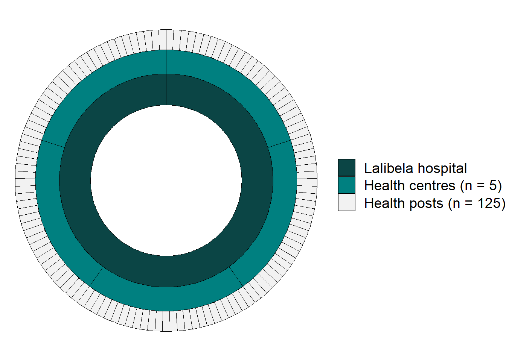
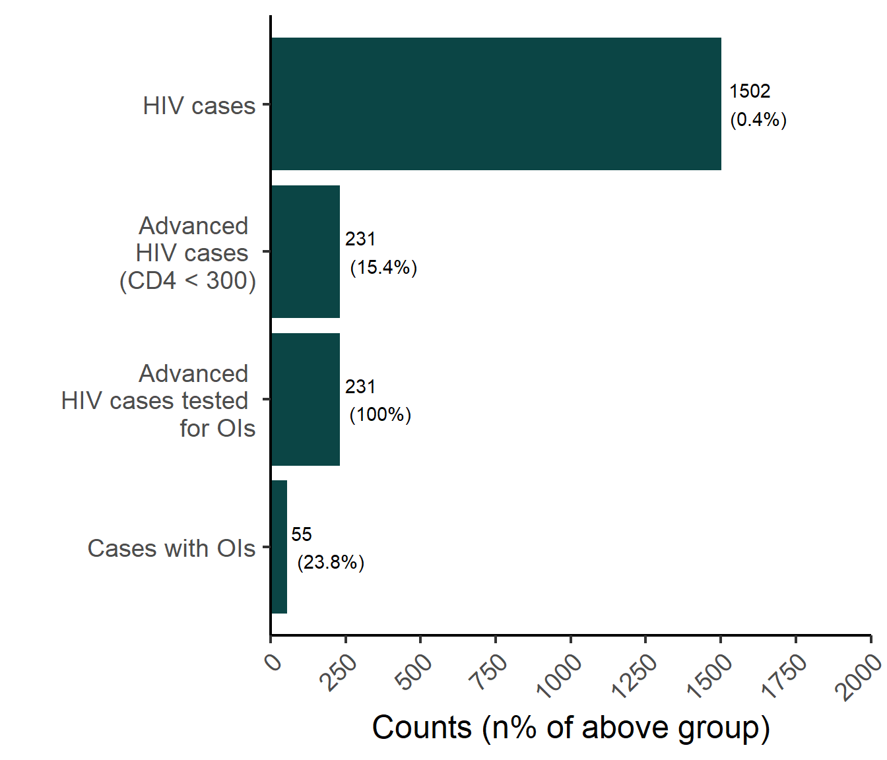

Opportunistic infections in HIV:
diagnostics, management & outcomes in rural Ethiopia
First Author (670000131) 1
Dr. Abu Bhakar2 Prof. Julie Thacker1
1 University of Exeter Medical School, Exeter, United Kingdom
2 Lalibela Hospital, Amhara, Ethiopia
Introduction
Human immunodeficiency virus (HIV) prevalence in Ethiopia is 1.0
(95% credibility interval 0.7-1.4) per 100,000 population; ten-fold higher
than the UK (1).
In Amhara region, north-eastern Ethiopia,
1.2% (95%CI 0.7-1.4) of people had HIV in 2016 (2).
While antiretroviral therapy (ART) has improved outcomes in most countries;
economically deprived rural areas still struggle with treatment retention and
viral suppression. Thus immunocompromised patients suffer from infections they
otherwise would not; contributing to a higher rate of mortality.
Lalibela hospital in Amhara has some diagnostic laboratory capacity and an
outpatient HIV department delivering ART. It is unclear whether there are
facilities for opportunistic infections in advanced HIV
infection (CD4 cell count <200/ml) (3).
This project aims to understand local hospital capacity in addressing diagnosis
and management of opportunistic infections among HIV infected people,
as well as patient outcomes.
Objectives
- Describe HIV patient care pathway in the Lalibela healthcare system.
- Describe diagnostic and management facilities in Lalibela hospital.
- Describe outcomes among patients in care.
Methods
This project involved a mixed methods approach, incorporating qualitative and
quantitave aspects.
The qualitative approach involved guideline review and semi-structured interviews
with local health care providers.
The qualitative approach involved gathering health system indicators in the form
of aggregate counts. This indicator data was gathered during the semi-structured
interviews and included:
- Total catchment population
- Number HIV cases in hospital cohort
- Number cases with advanced HIV (CD4 cell count < 300 cells/mm3)
- Number of patients with laboratory tests for opportunistic infections
- Number of patients testing positive for opportunistic infections
- Number of patients virally suprssed
Results
Patient care pathway
A decentralised healthcare system serving an ~350,000 catchment population; with 5 community health centres reporting to Lalibela hospital and 25 health posts reporting to each health centre, Figure 1.
- All hospital departments offer HIV RDT (high suspects tested)
- Health posts also have HIV RDT testing
- Initial and annual follow-up at hospital
- CD4, Viral load, malnutrition screening
- Medication dispensed at health centres
- Ease of access leading to better conitnuity of care
- All health care free under national insurance
- National HIV programme supported by the Global Fund for HIV, TB and Malaria

Figure 1: Visualisation of the health system in the Lalibela hospital catchment area
Diagnostics & management
There is a clear patient management pathway defined by a national programme.
The hospital has well resourced laboratory capacity, which is supported by
the US Centre for Disease Control and Prevention as well as Tulane
University. The available lab test and management at the hospital level are displayed
in Table 1.
- Viral load and HIV resistance testing sent to capital lab (25 days for results)
- CD4 count tests available at hospital
- All patients presenting with CD4 count <350 prophylactically given broad spectrum ABx against diarrhoea and fungal infections
| Disease | Diagnostics | Management |
|---|---|---|
| Tuberculosis |
Microscopy PCR |
Negative: prophylatic Isoniazide Positive: Tripple therapy |
| Sexually Transmitted Infections | ELISA | Broad spectrum ABx |
| Crytococcal Meningitis | Culture | Appropriate ABx |
| Viral Hepatitis (B & C) |
PCR ELISA |
Patient pays privately for test, managment privately in capital |
Outcomes
With the national pharmacy association supplying hospitals, there are infrequent ruptures. However there are shortages of second line ARV. Despite this there are quite impresive outcomes as seen in Figure 2.
- 88% of those in the cohort are virally surpressed
- Among those with OIs: 55 had diarrhoea or skin infections, only 1 patient with extrapulmonary TB

Figure 2: Cascade of care for opportunistic infections among HIV infected patients
(N = 350,000)
Discussion / Conclusion
The estimated HIV prevalence based on the hospital catchment population is much lower
than literature described values for the region.
This along with the annecdotal reasoning that Lalibela prefecture is better off
than the surrounding region may explain the very impressive outcomes.
Nevertheless this appears to be a well structured and resourced health system
for addressing opportunistic infections in HIV patients.
Future studies should consider the impact on TB monotherapy on antimicrobial resistance
prevalence, as well as the potential impact of making viral hepatitis testing and
management locally available free of charge.
References
1. UNAIDS. UNAIDS data 2019. Joint United Nations Programme on HIV/AIDS (UNAIDS); 2019.
2. Kibret GD, Ferede A, Leshargie CT, Wagnew F, Ketema DB, Alebel A. Trends and spatial distributions of HIV prevalence in Ethiopia. Infectious Diseases of Poverty. 2019 Oct;8(1):90.
3. Assefa Y, Kiflie A, Tesfaye D, Mariam DH, Kloos H, Edwin W, et al. Outcomes of antiretroviral treatment program in Ethiopia: Retention of patients in care is a major challenge and varies across health facilities. BMC Health Services Research. 2011 Apr;11(1):81.